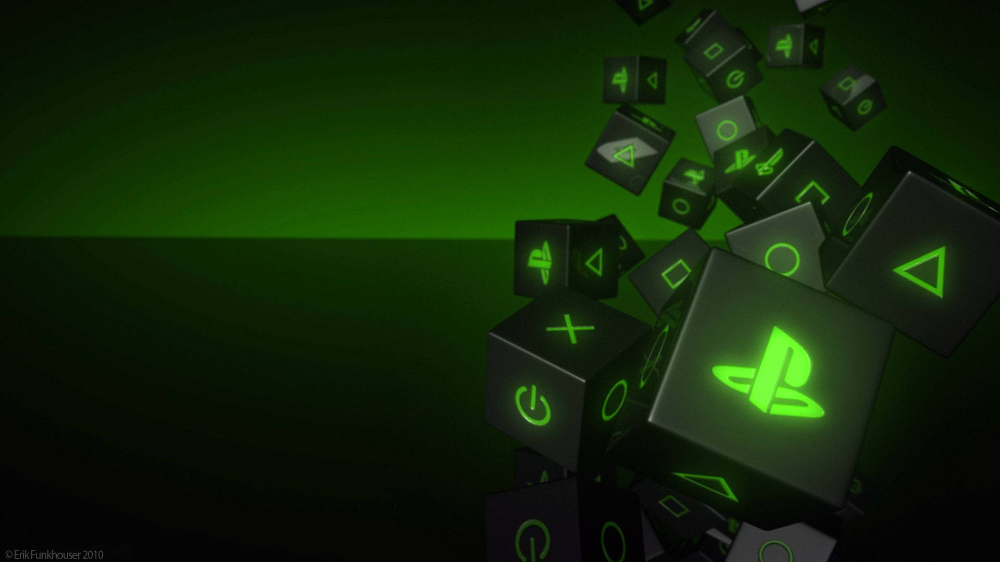

Avanço
Um dos primeiros exemplos conhecidos é o jogo Tennis for Two, criado em 1958 pelo físico William Higinbotham. O jogo simulava uma partida de tênis utilizando um osciloscópio como tela. A representação visual era extremamente simples, mas o conceito era revolucionário para sua época: duas pessoas podiam controlar elementos na tela e competir em uma experiência interativa.
Poucos anos depois, surgiu Spacewar!, desenvolvido no MIT na década de 1960. O jogo colocava duas naves espaciais em combate, permitindo que os jogadores controlassem suas respectivas naves. Apesar de funcionar em um computador gigantesco para os padrões atuais, Spacewar! ajudou a demonstrar o potencial dos computadores como plataformas de entretenimento.
Esses primeiros projetos ainda não tinham a aparência que hoje associamos aos videogames. Não havia personagens detalhados, cenários elaborados ou animações sofisticadas. Porém, eles estabeleceram os fundamentos da interação digital.